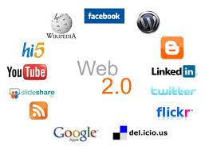
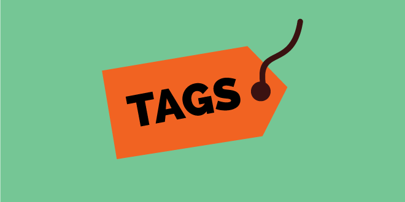
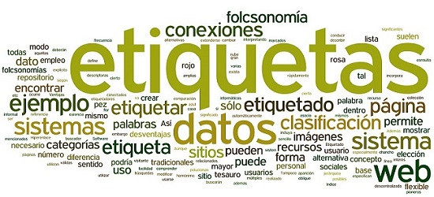
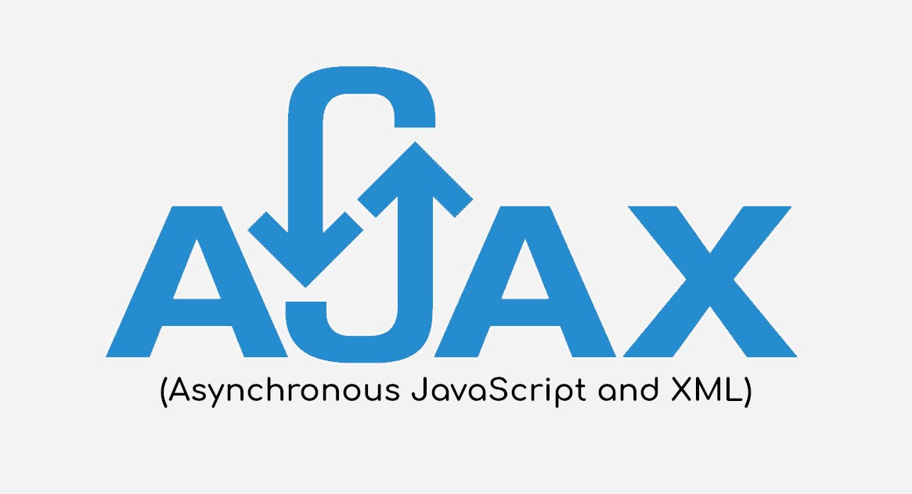
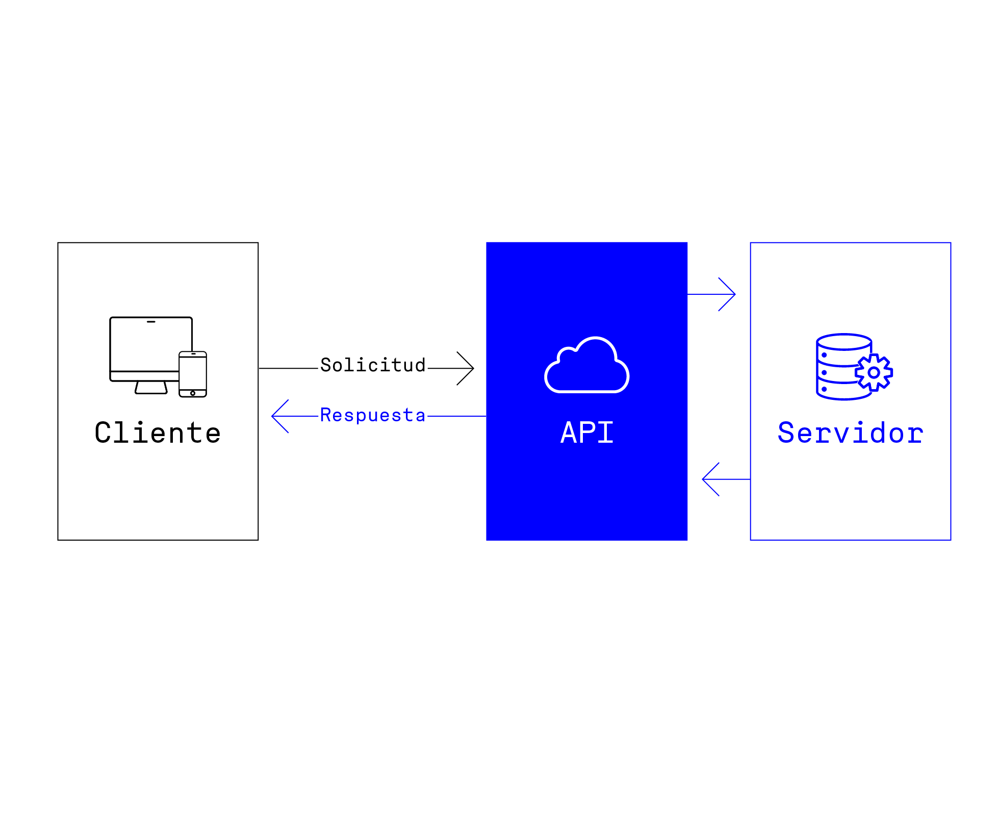

Tecnologías de la web 2.0
Se refiere a un modelo de páginas Web que facilitan la transmisión de información, la interoperatividad y la colaboración entre sus usuarios, mediante un diseño centrado en sus necesidades, más que en las de la empresa. En otras palabras, se trata de una tendencia en la Internet que aboga por una red más interactiva, menos unilateral, en la que los usuarios no ocupen un rol meramente pasivo.

Un blog es, en la jerga de internet, una bitácora digital, es decir, una página web que funciona a modo de un diario personal o empresarial, actualizado por sus autores con contenidos diversos y que a menudo cuenta con comentarios o participación de los lectores. Su nombre proviene de la contracción de Web Log (“bitácora en línea” o “bitácora web”) en un solo vocablo: Weblog y posteriormente abreviado en blog.
Se utiliza en el ámbito de Internet para referirse a las páginas web cuyos contenidos pueden ser editados por múltiples usuarios a través de cualquier navegador. Dichas páginas, por lo tanto, se desarrollan a partir de la colaboración de los internautas, quienes pueden agregar, modificar o eliminar información.
RSS es un término que responde a las siglas de Really Simple Syndication. Es un formato de archivo realizado en lenguaje XML que codifica la información de forma que cualquier servicio online, programa o aplicación pueda mostrarla como considere adecuado. Es decir, se trata de una forma de empaquetar un contenido para facilitar su difusión y reproducción en otros lugares.
Es un programa de audio (y a veces video) que se distribuye digitalmente a través de internet, similar a un programa de radio, pero en formato de episodios que se pueden descargar o escuchar en línea. Los podcast pueden ser grabados o transmitidos en vivo y ofrecen una amplia gama de temas, desde entrevistas y conversaciones hasta narraciones y debates.
Las redes sociales son plataformas digitales formadas por comunidades de individuos con intereses, actividades o relaciones en común (como amistad, parentesco, trabajo). Las redes sociales permiten el contacto entre personas y funcionan como un medio para comunicarse e intercambiar información.

Los tags HTML corresponden a elementos de código HTML en una página web. Forman parte integral de la composición de la página, ya que permiten que se estructure y dé forma al contenido. Además, los buscadores usan específicamente algunos tags HTML como indexación de sitios web y parámetros de clasificación (marketing en buscadores).

Alude a un sistema de clasificación en el que los usuarios aplican etiquetas públicas a diversos contenidos en línea, generalmente para que éstos sean más fáciles de encontrar. Con el tiempo, esto puede dar lugar a un sistema de clasificación basado en estas etiquetas que permite saber con qué frecuencia se aplican o buscan, en contraste con una clasificación taxonómica diseñada por los propietarios del contenido y especificados al momento de su publicación.

se refiere a un grupo de tecnologías que se utilizan para desarrollar aplicaciones web. Al combinar estas tecnologías, las páginas web parece que son más receptivas puesto que los paquetes pequeños de datos se intercambian con el servidor y las páginas web no se vuelven a cargar cada vez que un usuario realiza un cambio de entrada.

son mecanismos que permiten a dos componentes de software comunicarse entre sí mediante un conjunto de definiciones y protocolos. Por ejemplo, el sistema de software del instituto de meteorología contiene datos meteorológicos diarios. La aplicación meteorológica de su teléfono “habla” con este sistema a través de las API y le muestra las actualizaciones meteorológicas diarias en su teléfono.
